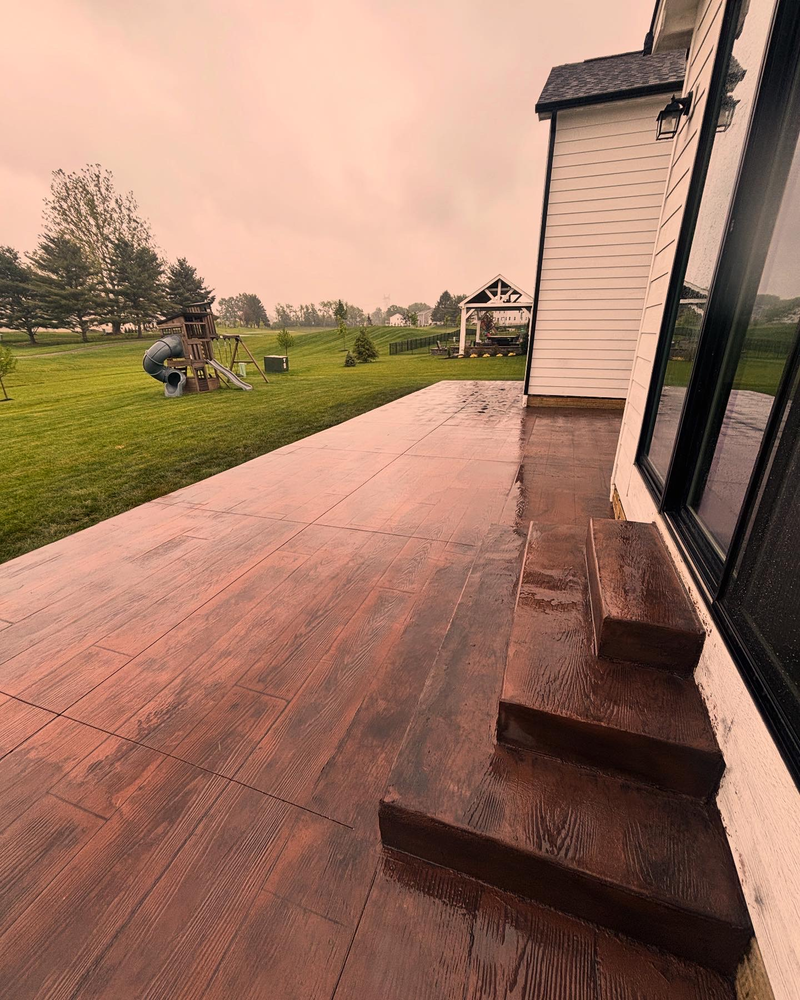

About Us
Our Story
Founded over 20 years ago, Magistro Concrete & Restoration has grown from a small, family-run operation into one of the region's most trusted names in concrete work. Our journey began with a simple mission: to deliver reliable, high-quality concrete solutions with honesty and integrity. Today, we remain a family-owned and operated business, proud to serve our community with the same values and commitment that started it all.
- 20+ Years of Experience in residential and commercial concrete projects
- Licensed & Insured for your peace of mind
- Family-Owned Values – honesty, reliability, and personal service
- Commitment to Quality – we use only the best materials and techniques
- Customer Satisfaction is our top priority

Our Mission
To build strong foundations and lasting relationships through quality craftsmanship, honest work, and a dedication to every project—big or small.